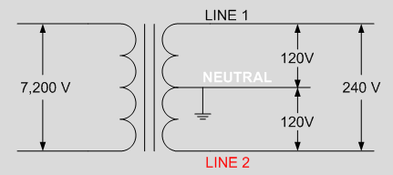
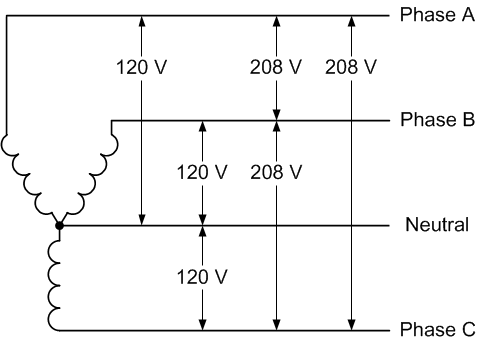
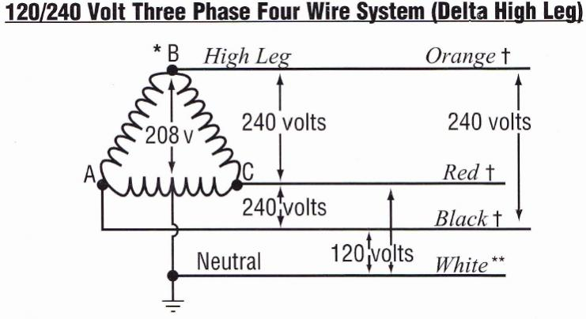

Common Residential and Commercial Electrical Configurations
Many people take for granted the electrical systems that power their every day lives. Plug something in and thats it right? Or just run some wires from the power station to your house our business and boom, you have power. Not quite. There is a lot more that goes into our electrical infrustructure than most people realize. I can't dive into all of it within this simple little HTML site, but I can show you some of the common configurations that are more than likey in your house or apartment building!
Common Electrical Phase Configurations
Single Phase
This configuration is the most common in residential and apartment level settings. This delivery configuration provides enough power for most small to mid range appliances.
Three Phase
This configuration is the most common among commercial and industrial settings. This delivery configuration provides plenty of power for most high demand applications such as motors and industrial machinery.
Three Phase - Delta High Leg
This is a less common but still relevant setup for smaller industrial settings. This delivery confiuration provides enough power for smaller motors and small industrial equipment